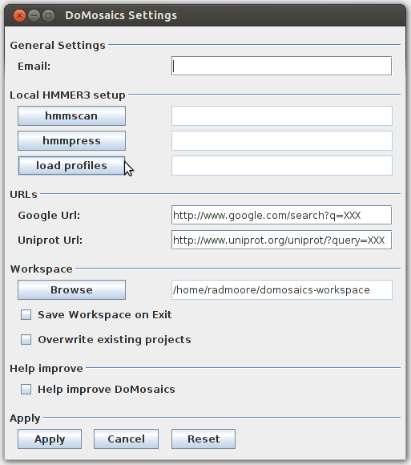
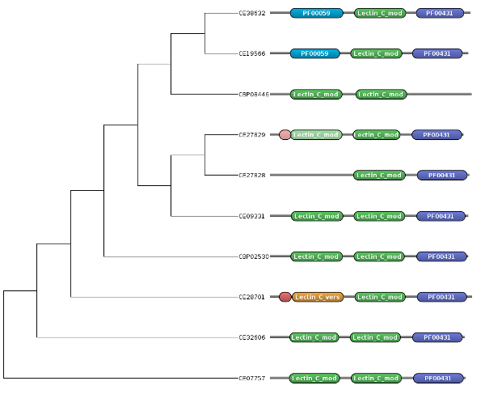
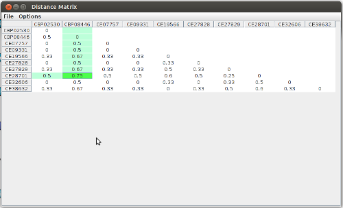
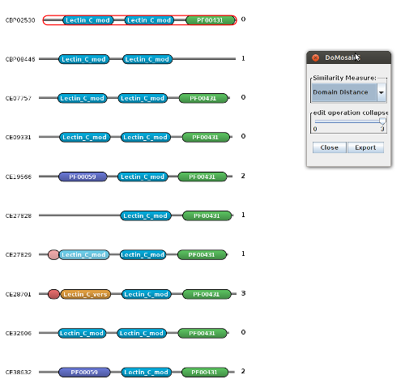
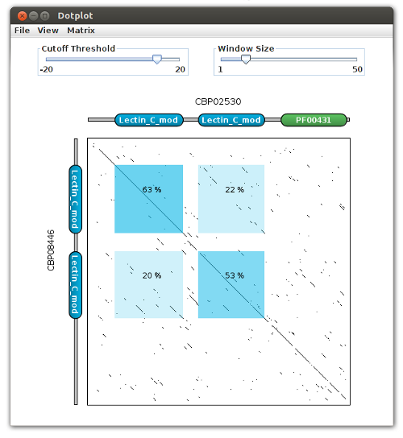
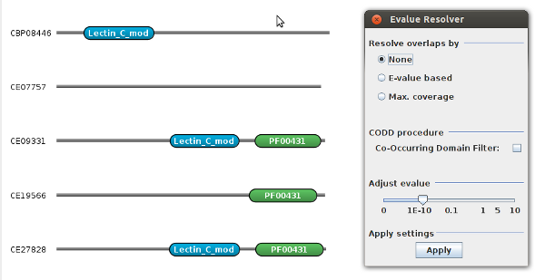

DoMosaics
Help
- Introduction
- Installation
- Getting started
- Loading data
- Domain annotation
- Actions
- Annotate domains with InterProScan
- Annotate domains using HMMSCAN
- Find Similar arrangements using RADS
- Create a tree based on sequences
- Create a tree based on domains
- Views
- Tools
1. Introduction
Most proteins are comprised of smaller (structural) modules - protein domains The evolution of proteins involves the re-arrangement, loss or gain of protein domains in a process referred to as modular evolution.
DoMosaics is a tool for analysing and visualizing aspects of modular protein evolution. It allows users to, starting with a set of related protein sequences, annotate protein domains (using different domain annotation methods), and visualize domain arrangements (the N- to C-terminal order of domains in a protein) along a phylogentic tree. It can be used to find out whether a domain of interest was lost, whether a group of proteins differs in its domain arrangements, or what the characteristic domains for a phylogenetic group are.
Beyond domain annotation, DoMosaics allows users to examine domain annotations to see whether the domains have been correctly identified. You can create dotplots, run a context-dependent similarity analysis and more. Furthermore, you can also run some general phylogenetic profiling, create domain network graphs, find domain insertion/deletion events or simply visualize and manipulate phylogenetic trees. All output can be saved as PDF or as SVG (which can be viewed in Firefox or edited using e.g. Adobe Illustrator or Inkscape) as well as in a number of common bitmap formats.
What DoMosaics is
What DoMosaics is not
This is the guide / documentation of DoMosaics. Use the menu at the top to browse by topic If you have a problem, or cannot find what you are looking for, please do not hesitate to get in touch with us under domosaics@uni-muenster.de.
2. Installation
Prerequists
DoMosaics requires a working Java installation. Furthermore, we recommend that users who plan to run local HMMSCAN jobs have a least a dual-core system. You can find the appropriate Java version for your system here: http://java.com/en/download/index.jsp If you plan to run HMMSCAN you will further more require the HMMER package, which you can obtain from here: http://hmmer.janelia.org/software
Installing DoMosaics
To get DoMosaics, navigate to the website www.domosaics.net, and go to the download section. Here, you can run DoMosaics using Java Web Start. In order to do so, you must select the JVM size (e.g. 500MB), and press 'Start DoMosaics'. Your browser will download a JNLP file and ask for you to confirm the security exception. Note that DoMosaics will require full permission to your system in order to interact with processes, write files etc. Once you confirm the security settings, the program should start. If you prefer, you can also Download the jar and run it manually (or compile the program from source). Choose the tab 'Direct Download' to get the binaries and source files.
If your browser does not autostart the jar file after download, it is likely that your browser is not set up to handle JNLP files. If so, when you start DoMosaics you will see a dialog asking you what to do with the file. In the window, click on Open with, select the javaws executable (depending on your operating system, the name can be different) and press OK. If the "open with" option does not display the Java Web Start executable, map the .jnlp file to Java Web Start manually. This procedure differs for different browsers - best google the right solution for your OS/Browser setup.
Using the java archive (jar)
As mentioned above, as an alternatively you can run the DoMosaics java archive directly. To download the archive, follow the download link from the sign-up email, and choose 'Get jar file'. If you do not wish to sign-up, go to the download section mentioned above and select 'Direct Download' from the tab. On *unix systems, you can run the Java archive as follows:[12:59] radmoore@joshua ~/Download $ java -jar domosaics.jarUsers of other systems should be able to double-click the jar file.
3. Getting Started
Working Directory
When DoMosaics starts, you will be required to select a working directory. The workspace (which includes all project data) will be saved in this directory. By default, the working directory will be under ${user_home}/domosaics-workspace. The main window consists of:
- the main menu and button bar on the top,
- the workspace with all projects on the left,
- and the main view on the right.
Example datasets
Main Menu, Actions, Load Example
Settings
Main Menu, File, Settings

General SettingsInterPro (read section Interproscan below) can be used to find domains in a set of protein sequences. This service is offered by the EBI. In order to use this free public service, users must provide a valid email address. While an email address can be provided in the user interface of interproscan and for each scan separately, it will be lost as soon as the dialog is closed. Users can provide a global email address here, which will be pre-filled in the interproscan form.
Note
the email address provided is used for interproscan only. Find out more on the conditions for using EBI Webservices here.Local HMMER3 Setup
If you use a local HMMER installation, you can pre-define the binaries and profiles you use for scanning here. For more information on what these fields mean (and what they are good for), consult the section on Hmmscan below.
WorkspaceDoMosaics project data are saved in folders, with all relevant data saved in xml files. The project folders are saved in a user-defined workspace folder (typically $user_home/domosaics-workspace). If DoMosaics does not have a workspace folder set upon start up, users are prompted to enter one. The workspace folder can be changed any time here.
Users are prompted whether the workspace is to be synchronized upon exit (in which any changes made to existing projects, as well as any new projects will be written to the workspace folder). This can be set as default by selecting the check-box 'Save Workspace on Exit'. If a project should already exist it can be overwritten (users will normally be prompted whether existing project files are to be overwritten). This too can be set as default.
Help improve
Should any errors occur while using DoMosaics, a simple error reports can be submitted to a dedicated bugzilla
instance. By agreeing to 'Help improve DoMosaics' we are made aware of any Java exceptions
which might occur while using DoMosaics.
Submitted error reports do not contain any information on data used. However, they do contain a dump of the current users environment which
often contains the username of the current user as well as directory names and paths (along with other, purely machine-based information).
The bug reports are used for the sole purpose of simplifying the reconstruction of the error (so that it can be fixed).
We greatly appreciate your help in eradicating any errors which may occur.
4. Loading Data
There are three data types used within DoMosaics:
- Trees
- Sequences
- Domains (arrangements)
Main Menu, File, Manage Projects, new Project, next, Sequence data
Seqeuence data
To load fasta files into DoMosaics, go to File, Manage Projects. Create a new project or select an existing project from the menu. Click on 'next'. Select the data type 'Sequence' and navigate to your fasta file. To associate the sequences with an existing domain-view, select a view from the drop down. Note that the sequences are matched with the domain arrangements of the domain view via their ID.
For example, this sequence
>P82176 MKCLLYLCLWCYCVLVSSSIVLICNGGHEYYECGGACDNVCADLHIQNKTNCPIINIRCN DKCYCEDGYARDVNGKCIPIKDCPKIRSRRSIGIPVDKKCCTGPNEHYDEEKVSCPPETC ISLVAKFSCIDSPPPSPGCSCNSGYLRLNLTSPCIPICDCPQMQHSPDCQwould match with a protein in the domain view named P82176. Everything between the '>' and the first white space is treated as the ID.
Domain Arrangements
Main Menu, File, Manage Projects, new Project, next, Arrangement
We recommend using the xdom format. It is the generic IO format which is an easy to read, fasta-like representation of a protein with its constituent domains. For example, the human protein ENSP00000376776 is represented in xdom format as:
>ENSP00000376776 617 57 171 DOMON 2.0e-25 213 341 Cu2_monooxygen 7.5e-43 360 521 Cu2_monoox_C 2.3e-52ENSP00000376776 consists of three domains (DOMON, Cu2_monooxygen, Cu2_monoox_C) and has a sequence length of 617. In the xdom format, domains are sorted in N- to C terminal order. Each domain line contains the start and stop position, some form of ID or accession number and an Evalue.
2. HMMSCAN output
HMMER is a suite of powerful tools for applying hidden Markov models (HMMs) to biological sequence data. HMMER is used to create Pfam HMMs. HMMSCAN is a program from the HMMER package, and is used to search protein sequences against a collection of HMMs. Using HMMSCAN, users can annotate known domains in a given sequence. DoMosaics can import domain annotation produced by using hmmscan with the
--domtblout option.
HMMSCAN can be run from within DoMosaics (see section Domain annotation). If you would like to run hmmscan from the command line, consult the excellent HMMER manual which can be found at http://hmmer.janelia.org Note also that the HMMI also has a very nice web interface to hmmscan (and a couple of other programs from the HMMER package).
Trees
Note that by a tree we here mean a phylogenetic tree which describes the evolutionary relationship between a set of proteins. This is not to be confused with a domain-tree, which is a DoMosaics view type.
Main Menu, File, Manage Projects, new Project, next, Tree
5. Domain Annotation
DoMosaics provides two distinct ways to annotate domains in protein sequences.
InterPro
The first method, InterProScan is a webservice provided by the IEB (http://www.ebi.ac.uk/). DoMosaics provides a graphical client for performing domain annotation with interproscan. This is the simplest method for annotating domains in protein sequences, however it can not be meaningfully applied to a large dataset. Find out more on how to performing a scan with InterProScan here.HMMER
For larger datasets, and to have more control over the annotation process, a local hmmscan installation is the most meaningful strategy. As mentioned above, hmmscan is part of the HMMER package. DoMosaics provides a simple graphical frontend to a local installation of hmmscan. Find out more on conducting a local hmmscan search here.6. Actions
DoMosaics provides two distinct ways to annotate domains in protein sequences.
InterPro
Note
Running an interproscan search requires a working internet connection.As mentioned in the last section, the European Bioinformatics Institute (EBI) offers a service, interproscan, by which protein sequences can be submitted to their systems for domain annotation. Currently, 17 domain databases are supported by interproscan, 10 of which can be used from within DoMosaics. For more information on interproscan, visit their website at http://www.ebi.ac.uk/interpro/about.html
Advantage
Disadvantages
Main Menu, Actions, Interpro // Button bar, magnifying glass labeled IPR
You can either load a fasta from disk, or select a sequence view (should you have previously loaded sequence data into a project).
Set parameters
The EBI requires that all remote submissions provide an email address. You can either set an email on a per-scan basis, or set it up for your future DoMosaics sessions in settings.
Submit job
Select a domain detection method/database from the dropdown menu (e.g. hmmpfam corresponds to Pfam), and submit the job. Hit apply when the job is complete and choose a name for the domain view.
Hmmscan
Hmmscan is a program from the HMMER package. It is used to search protein sequences against a database of hidden Markov models (HMM) profiles, such as those created stored in Pfam. HMMSCAN is used to detect the presence of domains in proteins.
Note
you can set default values for the binaries and profiles in the settings, found under Main menu, File, Settings.- A working Hmmscan binary
- A working Hmmpress binary OR a properly indexed database of HMMs
- Ideally, a machine with more then one core (e.g. Pentium dual core)
- Your sequences in fasta format
Main Menu, Actions, Hmmscan // Button bar, magnifying glass
Both Hmmscan and Hmmpress binaries can be downloaded as part of an archive from http://hmmer.janelia.org. Once downloaded, extract the archive and look for the 'binaries' folder. In there, you should find the required binaries (Hmmscan and Hmmpress). If you cannot find an archive for your OS, or the binaries do not work, you will have to compile from source - please check the HMMER manual on instructions how to do so.
HMMER3 scan binAs mentioned above, Hmmscan is used to search protein sequences against a collection of HMMs. It computes scores (and E-values which reflect the significance of scores) which measures the similarity between a query sequence and each model of the HMM library. Choose the hmmscan binaries which can be found in the binaries folder mentioned above.
HMMER3 press bin
Hmmpress is used to index the HMM library (which allows for swift searches, much like formatdb for BLAST). DoMosaics will automatically detect if your HMM library is pressed or not (and will press HMM library should the binary be available). Choose the hmmpress binaries which can be found in the binaries folder mentioned above.
Once the Hmmscan and Hmmpress binaries have been loaded, you must select the file containing the HMM profiles. It must be HMMER3 formatted. For example, Pfam-A profiles can be obtained from the Pfam FTP server under ftp://ftp.sanger.ac.uk/pub/databases/Pfam/current_release/Pfam-A.hmm.gz For more information on the profiles, and how you can create your own, consult the HMMER manual.
Note
that you can conduct searches and construct profiles on the HMMER website.Query sequences
Query Sequences You can either load a fasta from disk, or select a sequence view (should you have previously loaded sequence data into a project).
Options
To assert the presence of a domain in a protein, thresholds are generally used to minimize the number of false positives. The threshold can be either manually curated for each domain model (see the HMMER manual for a description of the gathering threshold) or automatically set to an E-value (confidence) cut-off for all models. In DoMosaics, if the confidence cutoff is selected, the per-model gathering threshold will be used. Otherwise, a global E-value cut-off can be entered. Filters
HMMER3 applies a number of filters which amount to a drastic increase in speed. However, the downside of these filers is that false positives can be expected (domains wrongly discarded by filters). HMMER, and DoMosaics, provides the option to turn off some of the filters. The "bias filter" is for biased amino-acid composition (low-complexity) and the "max filter" deactivates all filters (at the cost of much longer running times).
The Number of CPUs specifies on how many CPUs the scan will be performed.
Post processingHmmscan returns a list of all domain occurrences detected in a protein, which might contain overlaps. This frequently occurs with homolog domain families (specialization of an ancestral domain). DoMosaics has different methods for dealing with overlaps:
- it can keep overlapping domains, which can be resolved later by manually curation
- it can resolve overlaps based on "E-value" which is the standard approach used in Pfam or InterPro
- it can remove overlapping domains according to a "maximum-coverage" approach
As part of the post processing of domain annotation, DoMosaics allows for context-dependant annotation as a mean
to provide more complete domain annotation. The objective of context-dependant annotation is to detect
remote/divergent but relevant additional domains by using similar arrangements to find possibly missed annotation.
Confidence thresholds are to guarantee the (quasi-)absence of false positives. However, such
stringent policy leads to numerous missed domains, especially in remote or divergent species.
This can be dealt with by lowering detection threshold. However, this comes at the cost of exponential number of false positives.
The Co-Occurring Domain Detection (CODD) approach (described in Terrapon et al., Bioinformatics, 2009)
exploits the tendency of domain families to appear with a highly
reduced set of "collaborating" other families. It filters the false positives to only retain the most trust-worthy
domains that barely escape from recommended (pre-defined) thresholds.
Rapid Alignment of Domain Strings
RADS (Rapid Alignment of Domain Strings) is a search algorithm for finding similar domain arrangements to a given query. RADS employs a dynamic programming approach to align domains of two arrangements. It does not perform sequence comparison, and instead assumes that regions of two proteins which share a domains have a similar sequence. RADS is complimented by RAMPAGE (Rapid Alignment Method of Proteins based on domain ArranGEments), which aligns regions (domains and interdomainic) based on RADS results. RAMPAGE preforms a global alignment of the sequences which correspond to these regions, and provides increased sensitivity over RADS (in particular when comparing identical arrangements)
For more information on RADS, visit http://rads.uni-muenster.de
DoMosaics provides an interface to the RADS web service, and allows users to find arrangements in UniProt which are similar to a given query. There are two distinct ways of accessing the RADS interface from within DoMosaics:- via the main menu, Actions, RADS (or via the button bar with the rat logo)
- via the context menu of an arrangement (right click on an arrangement, RadsScan this arrangement - see image below)
Note
It is important to note that- the RADS/RAMPAGE webservice is Pfam-based (that is, it will only find arrangements with Pfam IDs)
- scans can only be performed using a single query sequence
You can load a fasta entry from a file, or load an existing sequence view. If this route is chosen, the sequences are first annotated (remotely, via the RADS webservice) using the Pfam domain definitions. After this step, the resulting arrangement is used as a query to find similar arrangements in UniProt.
Note that if your file or view contains multiple entries, only a single entry will be chosen for the scan. While for a file with multiple fasta entries the first entry will be chosen, using a sequence views with multiple entries results in the use of any sequence from the view (as the entries in a sequence view are not ordered). In other words, using a view to search only makes sense if you know all arrangements are the same (or if you expect them to be very similar, such as could be the case for a set of orthologous proteins).
Loading a domain arrangement
You can also load a domain arrangement (in xdom format) from a file. As with sequences, only one entry will be chosen from the file (the first); if a domain-view is chosen, the selection will be (as for sequences) seemingly random. Again, this only makes sense if the arrangements in the arrangement view are the same (or very similar). Furthermore, as the current implementation of RADS/RAMPAGE is based on Pfam domain definitions your search will be unsuccessful if you use arrangements with domains other than Pfam. If you have arrangements with other domain definitions, consider using the sequence instead.
Choosing a search algorithmBoth RADS and RAMPAGE can be used for the search (see above). A RAMPAGE search requires sequences, and implies an initial RADS search. In most cases, the score values can remain as is (Set defaults will restore the default scores if you should have changed them).
The results tableOnce the search has completed, Show results will list all hits that were found (ordered by score). Some information about the query, including a graphical representation of its arrangements are displayed at the top. Select hits of interest by clicking the import checkbox (or use the select all button to import all hits). Click on Import selection to import you selection. You can associate the scan hits with an existing project from the dropdown menu.
Create a tree
Note
It is important to know that DoMosaics is not a program for building trees.The proper construction of a phylogenetic tree is a complex endeavor, and is best done with dedicated software such as RaxML or FastTree. That said, DoMosacis is able to perform a simple tree construction by using the PAL java library for phylogenetic analysis. In the first step, the sequences are aligned used EBIs interface to ClustalW. The resulting alignment is then used to construct a tree.
Choose a datasetMain Menu, Actions, Trees, Create Tree
If you do not have sequences associated with the arrangements, you can build a tree based on a distance matrix created from differences in the domain arrangements (see using domains for tree creation below). Of course, you can select a regular sequence view for tree creation. Note that selecting a sequence view will clear any arrangement-views you may have selected.
Creating the tree
After selecting the dataset, click 'Next'. Select a substitution matrix from the top dropdown, and choose a
tree constructing method from the bottom. Click 'Finish', and, once the tree construction is complete,
give the new tree-view a name (which must be unique) and associate with a project.
Once you have constructed a tree, you might consider creating a domain-tree view.
Create a domain-tree
A domain tree is a tree with leaves associated to arrangements. It is a central element of DoMosaics, both for the analysis of domain arrangements across a protein family, as well as for the visualization of related proteins with their domain structure:
Main Menu, Actions, Trees, Create Domain Tree
7. Views
Views belong to projects and are displayed in the left-hand side of the workspace. Every project can have one of four different view types
- Sequence view
- Tree view
- Domain view
- Domain-tree view
Each view is associated with its own view panel (main window on the right), and comes with a distinct set of functionalities organised in a main menu (at the top of the view panel), and context menus available by a mouse right-click on items within the view. Within one project in the workspace, each of these four view types is a separate category (node in the tree):
Note that each of these four types is associated with a specific icon. Domain arrangements that are associated with sequences are signified by an additional 's' in the icon. Views can be selected through double click. An active view is displayed in the main view panel on the left.
There are a number of functionalities in each view. Here, we will only illustrate some of the features specific to DoMosaics. All views provide means for exporting back-end data to files (e.g. sequence view to fasta) or to graphics (pixel and vector).
Sequence view
The sequence view is the simplest of all views. Sequence views provide means for the user to maintain the association between a set of sequences and corresponding domain annotation or trees. Furthermore, sequence views can be selected wherever sequences are needed (e.g. for domain annotation). They can also be created from other views, for example through the use of the 'Select sequence' functionality in the Domain-view (see below).
Tree view
When a tree view is open, the main menu (main view panel at the right) will display the tree. A number of tree specific options are available under 'View' in the main menu (e.g. expand leaves or show bootstrap values). Tree visuals can be adjusted under 'Edit' (e.g. change edge weights or fonts)
Context menu: Node
A right mouse on nodes in the tree will show the node context menu, from which a number of operations are available such as highlight subtree, rotate children, re-root tree, collapse/expand etc. Note that functionalities available in a tree are also available in a domain tree.

Domain view
The domain view is the most central view in DoMosaics. As with the sequence and tree views, domains views have a distinct menu along the top of the main view panel. This menu provides the following functionalities:
- File
-
- Export
- Save dataset in current view as xdom or as graphic
- View
-
- Zoom mode
- When enabled, the current view is treated as a static graphic and allows zoom-in and zoom-out operations. While in this view, no context-operations can be used.
- Accession IDs
- When enabled, domain accession IDs are displayed instead of domain names (e.g. PF0001 instead of 7tm_1). If the used domain definition only has one type of identifier there will be no difference between names and accession IDs. For domain names, enable Domain Names.
- Proportional view
- When enabled, arrangements are displayed with a scale corresponding to their sequence length. Domains sizes are proportional to their length in the underlying data set. In contrast, when the un-proportional view option is selected every domain has the same size, and domains are displayed with different shapes and colors (both of which can be configured for each distinct family).
- MSA view
- When enabled, proteins are displayed as sequences, and the domains are signified using color-coded boxes. This can be useful for selecting sequence regions of interest (by dragging the mouse over regions of interest and clicking the right mouse button, sequence regions can be saved as new sequence views or fasta files).
- Fit to screen
- When enabled, the displayed arrangements are re-sized to fit to the visible screen.
- Evalue colorization
- When enabled, the alpha-value of the domain colors is changes in correspondance to the domains evalue. Domains with very high values become transparent, where as domains with very low evalues have strong colors.
- Show shapes
- When enabled, domains are displayed as shapes. The domain name is removed and domain families are distinguished through domain shape and color. Note that while the domain colors and shapes will be specific for families within projects, they may differ between projects. Both shapes and colors can be adjusted.
- Show legend
- Displays the legend of domains in the current domain view
- Search protein
- Search for a protein within the current view.
- Edit
-
- Domain composition
- Opens a dialog to manually modify domain annotation (start/stop positions). Can also be used to add domain annotation. Requires that a domain arrangement be selected.
- Associate with sequence
- Opens a dialog for mass assignment of sequences to arrangements in the domain view. Sequences can be provided in the form of an existing sequence view, or via an external (fasta) file. Arrangements are associated with fasta entries over the name of the protein.
- Delete Selected Arrangement
- Removes the currently selected arrangement from the view.
- Collapse Same Arrangements
- Reduces the number of displayed arrangements down to the unique arrangement set when selected.
- Collapse By Similarity
- Requires a selected arrangement. Opens a dialog where a distance filter can be chosen (Jaccard distance or Levenshtein edit distance). The displayed arrangements are filtered to show only those arrangements that meet the filter criteria (e.g. only those arrangements that can be reached in three single-step edit operations).
- Select
-
- Select All Domain Arrangements
- Selects all arrangements in the current view
- Select Domain Arrangement
- When active, clicking on an arrangement selects the arrangement. Selected arrangements have a red border.
- Select Sequences
- When selected, the mouse can be dragged over arrangements to select underlying sequence regions. Note that this only works, if the arrangements in the current view are associated with sequences.
- Reset shift positions
- When in the unproportional domain view, domains can be manually alligned with each other. This operation can be used to reset the position of aligned domains (effects the entire view).
- Export selection to new view
- Exports the current selection of arrangements to a new view. Opens a dialog in which the name of the new view and a new project must be specified.
- Export selection to existing view
- Exports the current selection of arrangements to an existing view.
Beyond the main menu, a number of operations are triggered in context, that is, by right-clicking on an
arrangement (that is between domains of an arrangement) or within domains of an arrangement.
The former provides the context menu of the arrangement, while the latter provides the context menu of the selected
domain.
Menu can be reached by right-click on a non-domain position in an arrangement.
As their are no non-domain positions displayed when arrangement are represented
as same-sized boxes (unproportional), this menu is only available in the
proportional arrangement visualization.
Menu can be reached from any domain-displaying view by through right-click
on a domain.

Arrangement context menu

Domain context menu
Domain-tree view
A domain tree view is a combination between a tree view and a domain view. The view panel menu and context menus are mixed, and allow access to the view specific-functionality from both the domain and the tree view.
8. Tools
Distance Matrix
Main Menu, Tools, Distance Matrix
Jaccard Distance
The Jaccard similarity coefficient is used for comparing sets, and is computed by dividing the intersection of two given sets by their union. Ergo, a Jaccard index of 1 signifies that two given sets are identical. The Jaccard distance can be easily computed by subtracting the Jaccard similarity coefficient from 1; it moves between 0 and 1. In DoMosaics, the compared sets correspond to domain sets.
Domain Distance
The Domain distance is an edit distance, in which the differences between two strings can be measured as the number of operations necessary to transform from one string into the other. Arrangements are strings of a proteins constituent domains. As such, two arrangements can be compared using their edit distance, using insertions and deletions as operations. A large domain distance indicates that a large number of operations are necessary to go from one arrangements to another, and may be indicative of a large evolutionary distance between the two considered proteins.
The distance matrix provides an overview of the distances between arrangements, whereas users can determine which distance is to be used under 'Options'. The IDs/Names of the proteins as they appear in the corresponding view are found along the axis; choosing a cell in the matrix will highlight the two proteins which are being compared. The distances can be exported to a .csv file for further processing.

Datasets can be filtered by these distance matrices. To do so, select an arrangement in a domain or domain-tree view, go to 'Edit' in the submenu and choose 'Collapse by similarity'. For example, you can filter the dataset by changing the max. allowed number of edit operations using a sliding bar

Domain Graph
Heads up!
The domain graph functionality of DoMosaics is still experimental.In a domain graph, domains are displayed as nodes and edges connect domains which co-occur within at least one protein. Domain graphs can be undirected, where the edges have no direction and hence are indicative only of co-occurrences, or directed, where edges have directions indicating the order in which they appear in proteins. In DoMosaics, domain graphs are directed (from N to C-terminus).

To show the domain-graph of the current domain-view dataset, choose tools -> domain-graph from the menu of the domain-view or the domain-tree-view. The numbers on the edges indicate the frequency with which the indicated domain-adjacency occurs in the dataset. For example, in the image above, Lectin_C_mod occurs a total of 9 times N-terminal to the domain PF00431.
Domain view sub menu, Tools, Domain Graph
The threshold slider at the bottom can be used to visually highlight parts of the graph which have at least x neighbours. This is particularly useful for very large datasets.
Domain Dotplot
A Dotplot is a graphical method for conducting a pairwise-sequence comparison. By comparing all positions of the first sequence to all positions of the second, matches (regions of similarity) of a given length can be identified (word-length). Using the two sequences as axes to a rectangular plot, a dot a positioned between words from both sequences which are similar.
Domain-dotplots are an extension of a regular dotplot. Given two selected domain arrangements with an underlying sequence attached (recognizable by a rectangular [s] which appears on mouse over on domains in the domain-view), a standard dotplot of amino-acids is created (with customisable substitution matrix, word length and score).

Additionally each domain of one protein is facing its corresponding (same domain family) in the other protein, and is represented by a square with the indicated average conservation. Hence, this adds to the global sequence conservation the information about which domain are the most conserved and, for example in case of multiple repeats, which domains are likely paralogs.
To create a domain dotplot, select two sequences of interest in the domain-view keeping in mind that they must be associated with an amino acid sequence. Once the two arrangements are selected (recognizable by a red border around the arrangements in question), go to 'Tools->Domain Dotplot'. Image export, matrix selection, and other options can be found in the tools menu.
Domain view sub menu, Tools, Domain Dotplot
E-value Resolver
This tool has been designed to post process domain annotation with loose (not stringent) E-value thresholds. It includes 3 filters of domain annotations: an e-value filter, an overlap resolver, and the Co-Occurring Domain Detection (CODD) method.

The E-value filter allows a dynamic visualization of domain arrangements of proteins. Starting with a domain annotation conducted with very high e-value thresholds, the user can play with the threshold settings and see impact on domain arrangements (as opposed iteratively re-annotating with varying thresholds).
The overlap resolver allows to clean the domain annotation after a "complete domain annotation process" which might contain overlapping domains at the same position. Only one domain occurrence is supposed to be present/active at one position of a protein. The usual overlap resolvers is based on E-value, only retaining domain occurrences with best e-values and removing overlapping domains incrementally. Additionally we propose a resolver that maximize the coverage of the protein by domains. These options are provided to be able to retrieve "standard arrangements" from overlapping ones. However, in some cases a user might be interested in keeping overlaps as they must not result from erroneous annotation by misleading amino-acid sequences similarities, but instead might also involve evolutionary relationships of domains. In this later case, one must question which function is actually present, especially when scores and e-values are high and significant.
The Co-Occurring Domain Detection (CODD) method (Terrapon et al., 2009) has been designed for the context-dependent detection of divergent domains in remote species or detecting domains in species which exhibit a high amino-acid composition bias. CODD works as a filter on putative domains (domains which do not satisfying defined thresholds) by removing the most doubtful domains and retaining the most reliable ones. The filter takes advantage if the known property of domain co-occurrence: most domain families are observed in proteins with only few other "favorite" (function collaboration/compatibility) domain families. Hence, using a list of correlated domain pairs, CODD can certify the presence of putative domains based on the asserted presence of others. This method is able to increase domain annotation in case of divergence/bias while rejecting the majority of false putative domains generated resulting from the loosening of E-value thresholds.